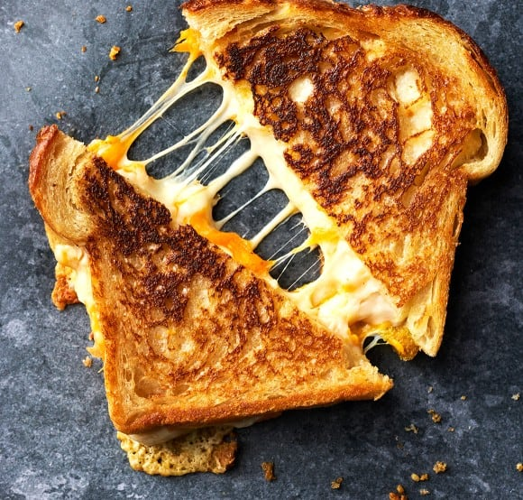

Grilled Cheese

Description
If you’re wondering how to make a grilled cheese sandwich, Jack’s your guy. He makes one so often that we have a dedicated grilled cheese pan in our kitchen. It’s seen a million grilled cheese experiments in its day–mayo on the bread, or softened butter? American cheese or Swiss?–all of which have helped him work out what, in our opinion, is THE BEST grilled cheese recipe. It’s incredibly simple, but it yields an undeniably crave-able sandwich. This grilled cheese is crisp and golden on the outside and deliciously melty in the middle (see that cheese pull up there?!). Tomato soup for serving is optional, but highly recommended.
Ingredients
- Good bread
- Mayonnaise
- Butter
- Dijon mustard
- And cheese, of course!
Recipe
- Place the bread slices on a cutting board and spread the top side with a thin layer of mayo. Flip one slice of bread and spread its other side with Dijon mustard. Layer the cheddar and Gruyère or Raclette cheeses on top of the mustard, then place the other slice of bread on top of the cheese, mayo side out.
- Heat a nonstick or cast-iron skillet over medium-low heat and melt enough butter in the bottom of the pan to coat it. Place the sandwich in the pan, cover, and cook for 2 to 3 minutes, or until the bottom slice of bread is golden brown and crisp. Flip, replace the lid, and cook until the other slice of bread is golden brown and the cheese is melted, 1 to 3 minutes. Reduce the heat to low if the bread is getting too brown before the cheese is fully melted.
- Slice and serve.
Home